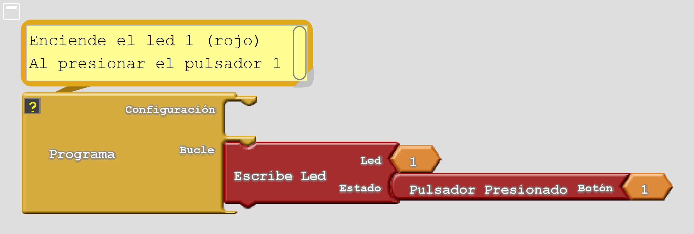
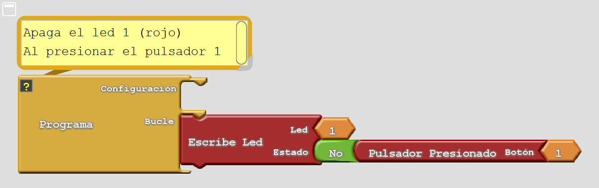
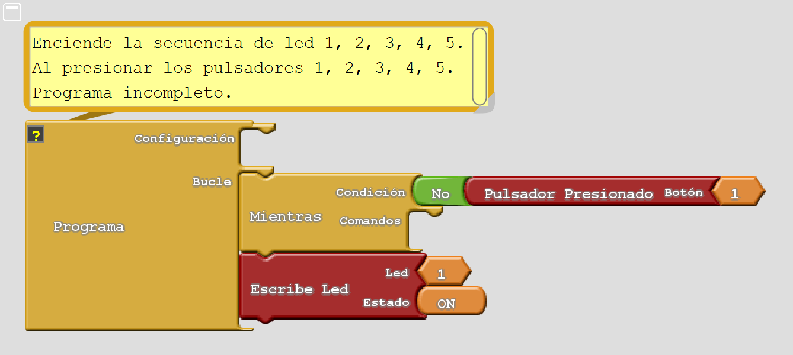
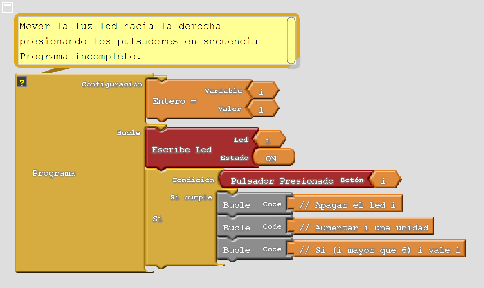
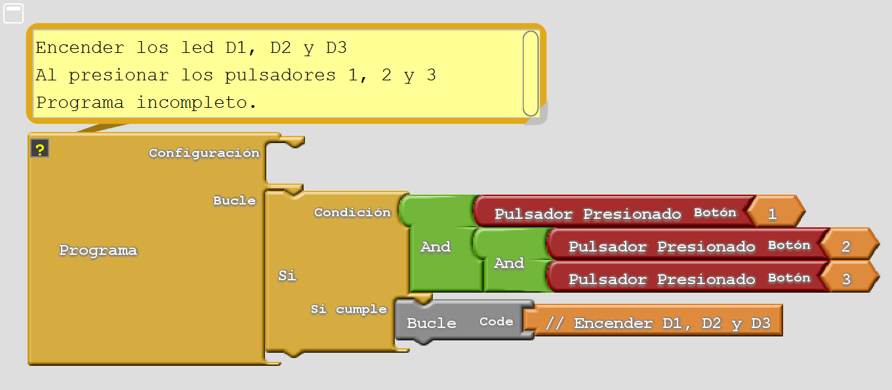
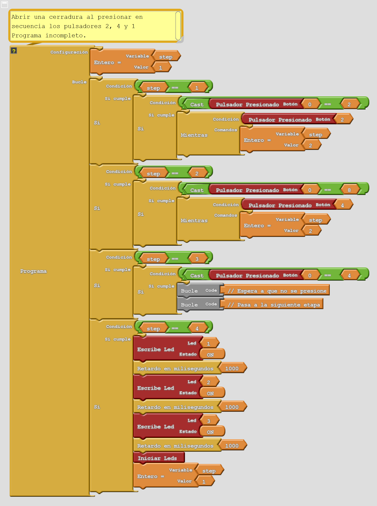

5. Botons i estats¶

Els pendents¶
- Llegiu l’estat d’un botó.
- Programa Arduino per respondre a les pulsacions de l'usuari.
Botons de panell de control PC42¶
El tauler PC42 té un teclat amb sis botons. Cada botó s’identifica amb un número o una constant que porta el seu nom. El nom de cada botó es pot veure a la pantalla d'impressió del circuit imprès. Les sis constants i números que representen els botons són les següents.
Constant Botó Key_left 1 Key_right 2 Key_down 3 Key_up 4 Key_enter 5 Key_back 6
El nombre de botons es representarà en aquest manual com a `` keynum``.
La funció: CPP: Func: KeyPressed¶
-
int
keyPressed(int keyNum)¶ Aquesta funció retorna el valor d’un botó. Retorna el valor 1 Si es prem el botó i 0 si no ho és. El valor d’aquesta funció filtra el soroll elèctric i els rebots.
El soroll elèctric ** ** són interferències associades a motors elèctrics, interruptors, llums modernes de baix consum o telèfons mòbils. Qualsevol d'aquests dispositius pot fer que es prengui un botó durant un breu moment, fins i tot si no és cert. És molt recomanable filtrar aquest soroll per evitar pulsacions "falses" o "fantasmes".
Els rebots són un fenomen que fa que el botó no es posi en contacte durant un període de temps curt, alguns mil·lisegons, just després de prémer -lo perquè la xapa metàl·lica "rebot" i deixa de posar -se en contacte. Aquest fenomen pot fer que la pulsació s’interpreti com a dues pulsacions, de manera que es recomana filtrar -la per eliminar -la.
L’inconvenient d’aquest filtre de soroll és que aquesta funció té un retard de 20 mil·lisegons per respondre ja que l’estat real del botó canvia fins que retorna el valor correcte.
Si s'utilitza l'argument `` key_all``, la funció retorna un número que depèn de la suma dels botons que es pressionen.
Botó de pressió Valor retornat Valor retornat (binari) Key_left 1 0B000001 Key_right 2 0B000010 Key_down 4 0B000100 Key_up 8 0B001000 Key_enter 16 0B010000 Key_back 32 0B100000 Si es prem el botó, la funció retornarà el valor 8. Amb el botó 6 pressionat, la funció retornarà el valor 32. Si els dos botons 4 i 6 es premsen alhora, la funció retornarà la suma de 8 i 32, és a dir, 40.
; Keynum |
; Key_values |
Enceneu un LED amb un botó¶
El programa següent s'encendrà el LED D1 quan es prem el botó 1 (`` key_left`))
1 2 3 4 5 6 7 8 9 10 11 12 13 14 15 | // Enciende el led D1 cuando se presione el pulsador 1
#include <Wire.h>
#include <PC42.h>
void setup() {
pc.begin(); // Inicializar el módulo PC42
}
void loop() {
int on_off;
on_off = pc.keyPressed(KEY_LEFT); // Lee el estado del pulsador 1
pc.ledWrite(1, on_off); // Enciende el led D1 si está
// presionado el pulsador 1
}
|
Programa equivalent a l’entorn Arcublock:
{kind=link}

En aquest enllaç podeu descarregar: Descarregueu: `Program Archive for Environment
Apagueu un LED amb un botó¶
El programa següent realitzarà la funció contrària a l'anterior
1 2 3 4 5 6 7 8 9 10 11 12 13 14 15 | // Apaga el led D1 presionando el pulsador 1
#include <Wire.h>
#include <PC42.h>
void setup() {
pc.begin(); // Inicializar el módulo PC42
}
void loop() {
int on_off;
on_off = pc.keyPressed(1); // Lee el estado del pulsador 1
pc.ledWrite(1, !on_off); // Enciende el led D1 si no está
// presionado el pulsador 1
}
|
El llenguatge d’Arduino permet escriure l’última funció del programa anterior en moltes altres formes. Aquestes són algunes alternatives que aconsegueixen el mateix resultat.
1 2 3 4 5 6 7 8 9 10 11 12 13 14 15 16 17 | // Enciende el led D1 si el pulsador 1 no está presionado
// Función NOT lógico
pc.ledWrite(1, !on_off);
// Función Negación binaria
pc.ledWrite(1, ~on_off);
// Función resta
pc.ledWrite(1, 1-on_off);
// Funciones de comparación
pc.ledWrite(1, (on_off == 0));
pc.ledWrite(1, (on_off < 1));
// Función XOR
pc.ledWrite(1, on_off ^ 1);
|
Com veieu, el llenguatge d’Arduino és molt ric en expressions. Gràcies a això, és un llenguatge molt potent i, al seu torn, complex per aprendre. Per aquest motiu, en els exemples següents apareixerà el nombre mínim d’expressions lògiques, per no complicar l’aprenentatge.
El programa equivalent a l’entorn Arcublock és més fàcil:

: Descarregueu: Programa d'entorn Arcublock: 'keyPressed_2' <_downloads/ardublock_keypresssed_2.abp> ``
La funció: CPP: Fun: KeyValue¶
-
int
keyValue(int keyNum)¶ Aquesta funció és similar a la funció: CPP: Fun: `KeyPressed 'View abans. Retorna el valor d’un botó. Si es prem el botó, retorna el valor 1 Si no es prem el botó retorna el valor 0. Aquesta funció no filtra el soroll elèctric tal com fa la funció: CPP: Fun: `KeyPressed '.
Aquesta funció retorna l'estat actual del botó sense filtre i, per tant, pot retornar valors falsos produïts per soroll elèctric o rebots.
Com a avantatge, aquesta funció retorna el valor del botó sense retard de temps en la resposta.
; Keynum |
; Key_values |
Exercicis¶
Programa el codi necessari per resoldre els problemes següents.
Enceneu el LED D1 amb el botó 1 i desactiveu el LED D1 amb el botó 2. Corregiu els errors sintàctics del programa següent. Els errors més habituals són: oblideu el punt i coma al final de la instrucció, canvieu la part superior i la minúscula, oblideu un bracket o parèntesis. Arduino ajuda a trobar errors de dues maneres. Quan escriviu una funció correcta, apareix amb un color taronja. En recopilar el codi, la finestra inferior informa sobre els errors que es troben.
1 2 3 4 5 6 7 8 9 10 11 12 13 14 15 16
// Programa con errores. // Enciende el led D1 con el pulsador 1 y // apaga el led D1 con el pulsador 2 #include <Wire.h> #include <PC42.h> void setup() { pc.Begin(); // Inicializar el módulo PC42 } void loop() { if (pc.keypressed(1)) // Si (pulsador 1 está presionado) pc.ledWrite(1, LED_ON); // Enciende led D1 if (pc.keypressed(2)) // Si (pulsador 2 está presionado) pc.ledWrite(1, LED_OFF) // Apaga el led D1
Enceneu tots els LED de la següent manera. El LED D1 s’encendrà en prémer el botó 1. Aleshores el LED D2 s’encendrà quan prémer el botó 2. El programa continuarà d’aquesta manera fins a 5 LED encesa. Completeu el programa que apareix a continuació.
1 2 3 4 5 6 7 8 9 10 11 12 13 14 15 16 17 18 19 20 21
// Programa incompleto. // Enciende todos los ledes uno a uno y por orden // con todos los pulsadores #include <Wire.h> #include <PC42.h> void setup() { pc.begin(); // Inicializar el módulo PC42 // Mientras (pulsador 1 no esta presionado), espera while (pc.keyPressed(1) == 0); // Enciende el led D1 pc.ledWrite(1, LED_ON); } void loop() { }
Programa equivalent a l’entorn Arcublock:

: Descarregueu: `Programa d'entorn Arcublock:
Al principi, el LED D1 s’encendrà. Quan es prem el primer botó, el LED D1 s’apagarà i el següent LED s’encendrà. La llum es traslladarà a la dreta al LED D5. En prémer el botó 5, el LED D5 s’apagarà i s’encendrà el LED D1 LED. Completeu el programa que apareix a continuació segons els comentaris.
1 2 3 4 5 6 7 8 9 10 11 12 13 14 15 16 17 18 19 20 21 22
// Programa incompleto. // Mover la luz de los ledes hacia la derecha // con los pulsadores #include <Wire.h> #include <PC42.h> int i; void setup() { pc.begin(); // Inicializar el módulo PC42 i = 1; // El primer led encendido es el 1 } void loop() { pc.ledWrite(i, LED_ON); // Enciende el led i if (pc.keyPressed(i)) { // Si (pulsador i está presionado) pc. // Apaga el led i i = // Aumenta i en una unidad if (i > 6) i = 1; // Si (i es mayor que 6) i vale 1 } }
Programa equivalent a l’entorn Arcublock:

: Descarregueu: Programa de l'entorn Arcublock: 'keyPressed_4' <_downloads/ardublock_keypresssed_4.abp> ``
Modifiqueu el programa anterior perquè els LED es mostrin de D6 a D1. Quan arribi el torn de la LED D1, el LED D6 tornarà a encendre.
Els tres LEDES D1, D2 i D3 s’encendran quan els tres botons 1, 2 i 3. Utilitzeu l’operador '&&&&&&&&AL que avalua si es produeixen dues condicions alhora. Completeu el programa que apareix a continuació segons els comentaris.
1 2 3 4 5 6 7 8 9 10 11 12 13 14 15 16 17 18 19 20 21
// Programa incompleto. // Enciende los ledes D1, D2, D3 cuando // se presionen los pulsadores 1, 2 y 3 #include <Wire.h> #include <PC42.h> void setup() { pc.begin(); // Inicializar el módulo PC42 } void loop() { if (pc.keyPressed(1) && // Si ( (pulsador 1 presionado) y pc.keyPressed(2) && // (pulsador 2 presionado) y pc.keyPressed(3)) { // (pulsador 3 presionado)) pc. // Enciende los ledes D1, D2 y D3 } }
Programa equivalent a l’entorn Arcublock:

: Descarregueu: Programa de l'entorn Arcublock: 'keyPressed_5' <_downloads/ardublock_keypresssed_5.abp> ``
Després de prémer per tal de la seqüència del botó 2, 4 i 1, s’obrirà un bloqueig electrònic. L’obertura s’indicarà il·luminant els LEDs vermells, grocs i verds, un cada segon. Completa els forats del programa que apareix a continuació segons els comentaris.
1 2 3 4 5 6 7 8 9 10 11 12 13 14 15 16 17 18 19 20 21 22 23 24 25 26 27 28 29 30 31 32 33 34 35 36 37 38 39 40 41 42 43 44 45 46 47 48 49 50 51 52 53 54 55 56 57 58 59 60 61 62 63 64 65 66 67 68 69 70 71 72 73 74 75 76 77 78
// Programa incompleto. // Cerradura electrónica // Presionar la secuencia 2, 4, 1 para abrir la cerradura #include <Wire.h> #include <PC42.h> int step; void setup() { pc.begin(); // Inicializar el módulo PC42 step = 1; // Espera la pulsación del primer pulsador } void loop() { // Si (etapa del programa es 1) if (step == 1) { // Si (solo el pulsador 2 presionado) if (pc.keyPressed(0) == 0b00000010) { // Espera a que no esté presionado while(pc.keyPressed(2)); // Pasa a la siguiente etapa del programa step = 2; } } // Si (etapa del programa es 2) if (step == 2) { // Si (solo el pulsador 4 presionado) if (pc.keyPressed(0) == 0b001000) { // Espera a que no esté presionado while(pc.keyPressed(4)); // Pasa a la siguiente etapa del programa step = 3; } } // Si (etapa del programa es 3) if (step == 3) { // Si (solo el pulsador 1 presionado) if ( ) { // Espera a que no esté presionado // Pasa a la siguiente etapa del programa } } // Si (etapa del programa es 4) if (step == 4) { // Enciende el led rojo y espera un segundo pc.ledWrite(1, LED_ON); delay(1000); // Enciende el led amarillo y espera un segundo pc.ledWrite(2, LED_ON); delay(1000); // Enciende el led verde y espera un segundo pc.ledWrite(3, LED_ON); delay(1000); // Apaga todos los ledes pc.ledBegin(); // Pasa a la primera etapa del programa step = 1; } }
Programa equivalent a l’entorn Arcublock:

: Descarregueu: Programa de l'entorn Arcublock: 'keyPressed_6' <_downloads/ardublock_keypresssed_6.abp> ``